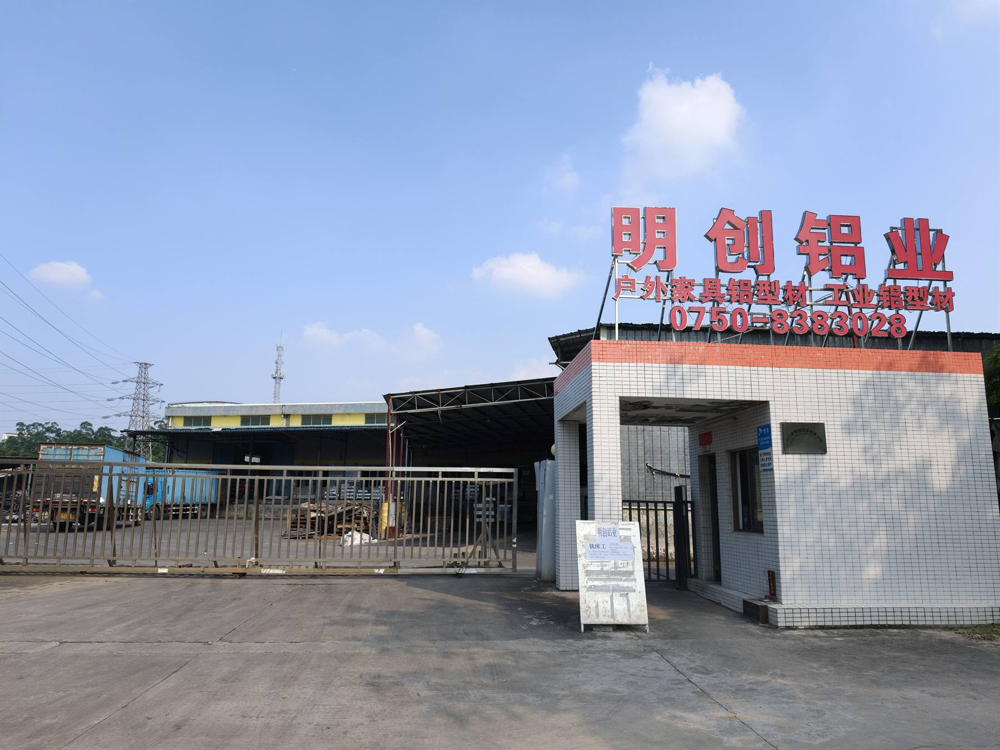
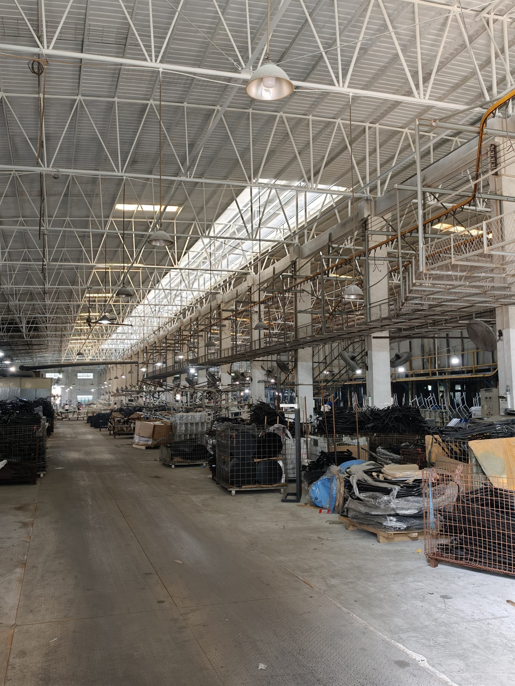

Integrated manufacturing network
Integrated manufacturing network across Guangdong and Cambodia
We work through our own manufacturing operations and long-term affiliated production partners across extrusion, fabrication, finishing, assembly and export. One commercial relationship, whichever units your programme runs through.

China · Guangdong
The metalworking base
Guangdong is where aluminum outdoor furniture is actually made, and our plants sit in the middle of that supply base — close to billet suppliers, coating lines, hardware makers and the port.
This is where the difficult work happens: cutting dies, running presses, holding tolerances on machined components, welding frames that have to stay square, and finishing surfaces that have to survive five years of sun and salt.
- Aluminum extrusion on in-network presses
- CNC machining and metal parts production
- Frame welding and fabrication
- Furniture component manufacturing
- Surface finishing — powder coat, anodizing, wood-grain transfer
- Die and mold development, catalogued for repeat orders
Production units
Seven units, seven specialisations
A mix of our own manufacturing operations and long-term affiliated production partners. Each unit does what it is best at, and work is routed accordingly — you deal with one commercial relationship regardless of how many of them touch your order.
Work is allocated across these units by process fit, capacity and delivery date. More than 3,000 workers are employed across our manufacturing network.

Cambodia
Cambodia manufacturing option
For suitable programmes, assembly, finishing, packaging and finished-goods manufacturing can be performed in Cambodia.
Production routing is evaluated based on product requirements, capacity, lead time and applicable trade requirements. For some programmes the natural split is metalwork and components in Guangdong, where the process capability lives, with assembly and packing in Cambodia. For others, everything runs from China.
We will work through the manufacturing options with you on the facts of your specific programme. Regulatory and customs matters are for your own advisors — we do not offer that advice, and you should be cautious of any supplier who does.
- Furniture assembly lines
- Finished furniture production
- Alternative manufacturing and export route
- Retail-ready and drop-ship packing
| Registered entity | Baiming Camis Furniture (Cambodia) Co., Ltd. |
|---|---|
| Plant address | Fengfu International SEZ, Prey Sakum Village, Prey Thom Commune, Kompong Rou District, Svay Rieng Province, Cambodia |
| Zone | Special Economic Zone, on the Vietnam border approximately two hours from Ho Chi Minh City port |
Why this matters to a U.S. buyer
One network beats a chain of strangers
Single-factory sourcing works right up until the moment it does not — a capacity crunch, a quality problem, a shipping season. Then it becomes very expensive very quickly.
Capacity headroom
Seasonal peaks are absorbed across the network instead of pushing your delivery date out.
Process routing
Each stage runs in the unit best equipped for it, rather than wherever the order happened to land.
Single accountability
One quotation, one schedule, one person answering for the result across every stage.
Continuity
If one unit has a problem the programme does not stop — the tooling and the drawings stay with the network.
Want the production routing mapped for your programme?
Tell us the product, the volumes and the delivery window. We will come back with the routes worth considering and what each one costs.